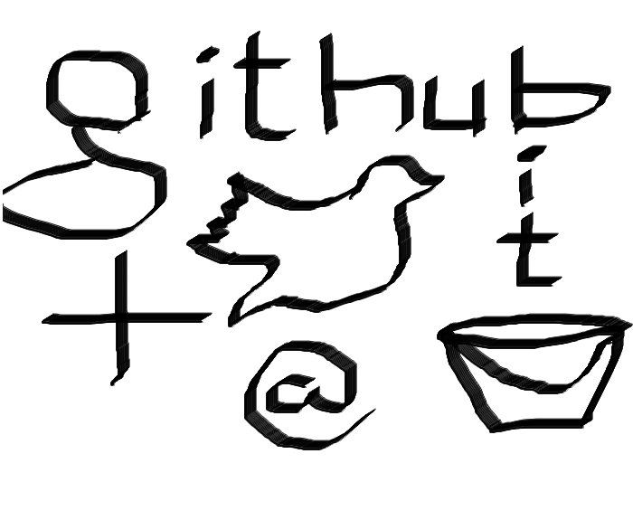

- Home
- Publications
- Tools
- Sketching
- Photography
Aasish Pappu
Ph.D. StudentResearch Advisor: Alex Rudnicky Language Technologies Institute Carnegie Mellon UniversityResearch Interests
|

|
 |
Publications
- A. Pappu and A. I. Rudnicky, "The Structure and Generality of Route Instructions". Proceedings of SIGDIAL, July 2012, Seoul, Republic of Korea.
- A. I. Rudnicky, A. Pappu, P. Li, and M. Marge, "Instruction Taking in the TeamTalk System". Proceedings of AAAI Fall Symposium - Dialog with Robots, November 2010, Arlington, VA.
- A. Pappu, "Using Wikipedia for Hierarchical Finer Categorization of Named Entities". Proceedings of PACLIC 23, December 2009, Hong Kong.
- M. Marge, A. Pappu, B. Frisch, T. K. Harris and A. I. Rudnicky, "Exploring Spoken Dialog Interaction in Human-Robot Teams". Robots, Games, and Research: Success stories in USARSim IROS Workshop, October 2009, St. Louis, MO, USA.
- A. Pappu and R. Sanyal, "Vaakkriti: Sanskrit Tokenizer". Proceedings of IJCNLP, January 2008, Hyderabad, India.
- A. Pappu and A. Trivedi, "SpamWall: Heuristic Filter for Web-Spam". accepted at WIC/IEEE/ACM Intl. Joint Conf. on Web Intelligence and Intelligent Agent Technology 2006, Hong Kong.
- K. A. Kumar, A. K. Pappu, K. S. Kumar, and S. Sanyal, Hybrid Approach for Parallelization of Sequential Code using Block level and Function level Parallelization. Proceedings at IEEE PARELEC 2006, Poland.
Tools
Research Software
I am an active developer of Olympus Dialog framework. Some of the software listed below is based on Olympus
- TeamTalk - Robot Navigation Dialog Framework: Talk with robots in a simulated 3D environment Requirements: Windows, Visual Studio, and Perl
- Kinect port for Olympus Dialog Framework: Talk with robots hands free Requirements: Windows, Visual Studio, Kinect SDK and Perl
- Network based audio input for Olympus Dialog Framework: Low-fi solution to run dialog system on remote server and capture audio at the client Requirements: Windows, Visual Studio, and Perl
Fun Software
- Web based Speech enabled Virtual Chauffeur - Experience driving in a speech enabled autonomous car [source code]
- Web based Speech enabled Chatbot: Talk about random stuff
- Desktop based News gossip speech bot - Requires Windows, Visual Studio, and Perl
- Pocketsphinx Android App [source] [apk] - Pocketsphinx is a speech recognition engine for small devices
Navigation Corpus
- Navagati Corpus - A corpus of spoken route instructions collected at CMU campus. Paper describing the corpus and experiments related to it [pdf].